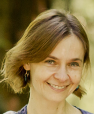
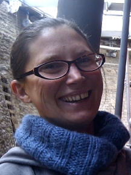
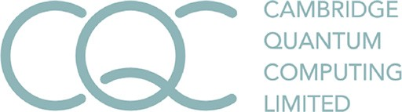

Second Symposium on Compositional Structures (SYCO 2)University of Strathclyde |
The Symposium on Compositional Structures is a new interdisciplinary series of meetings aiming to support the growing community of researchers interested in the phenomenon of compositionality, from both applied and abstract perspectives, and in particular where category theory serves as a unifying common language. We welcome submissions from researchers across computer science, mathematics, physics, philosophy, and beyond, with the aim of fostering friendly discussion, disseminating new ideas, and spreading knowledge between fields. Submission is encouraged for both mature research and work in progress, and by both established academics and junior researchers, including students.
Submission is easy, with no format requirements or page restrictions. The meeting does not have proceedings, so work can be submitted even if it has been submitted or published elsewhere. You could submit work-in-progress, or a recently completed paper, or even a PhD or Masters thesis.
While no list of topics could be exhaustive, SYCO welcomes submissions with a compositional focus related to any of the following areas, in particular from the perspective of category theory:
- logical methods in computer science, including classical and quantum programming, type theory, concurrency, natural language processing and machine learning;
- graphical calculi, including string diagrams, Petri nets and reaction networks;
- languages and frameworks, including process algebras, proof nets, type theory and game semantics;
- abstract algebra and pure category theory, including monoidal category theory, higher category theory, operads, polygraphs, and relationships to homotopy theory;
- quantum algebra, including quantum computation and representation theory;
- tools and techniques, including rewriting, formal proofs and proof assistants, and game theory;
- industrial applications, including case studies and real-world problem descriptions.
This new series aims to bring together the communities behind many previous successful events which have taken place over the last decade, including Categories, Logic and Physics, Categories, Logic and Physics (Scotland), Higher-Dimensional Rewriting and Applications, String Diagrams in Computational, Logic and Physics, Applied Category Theory, Simons Workshop on Compositionality, the Yorkshire and Midlands Category Theory Seminar, and the Peripatetic Seminar in Sheaves and Logic.
SYCO 1 was held in September 2018 at the University of Birmingham. The steering committee hopes that SYCO will become a regular fixture in the academic calendar, running regularly throughout the year, and becoming over time a recognized venue for presentation and discussion of results in an informal and friendly atmosphere.
Invited speakers
|  |  |
| Corina Cirstea | Martha Lewis |
| Department of Electronics and Computer Science, University of Southampton | Institute for Logic, Language and Computation, University of Amsterdam |
| Compositionality in Semantic Spaces | |
Accepted presentations
A list of accepted presentations can be found here.Important dates
All deadlines are 23:59 anywhere-on-earth on the given dates.
Submission deadline: Friday 16 NovemberAuthor notification: Friday 23 NovemberTravel support application deadline: Thursday 29 November 2018- Registration deadline: Friday 7 December (registration form)
- Symposium dates: Monday 17 December and Tuesday 18 December 2018
Schedule
The talks will take place in room MC301, on the 3rd floor of the McCance Building of the University of Strathclyde. The registration, coffee breaks, and drinks reception will be just outside this room.
| Time | Monday 17 December | Tuesday 18 September |
|---|---|---|
| 09:00–09:30 | Martha Lewis, "Compositionality in Semantic Spaces" (invited talk) | |
| 09:30–10:00 | ||
| 10:00–10:30 | Benjamin Dupont: "Diagrammatic rewriting modulo isotopy" | |
| 10:30–11:00 | REGISTRATION AND COFFEE | COFFEE BREAK |
| 11:00–11:30 | Xuexing Lu, Yu Ye and Sen Hu: "A graphical calculus for semi-groupal categories" | |
| 11:30–12:00 | Corina Cirstea, TBA (invited talk) | Sander Uijlen: "On process matrices and non-signalling processes" |
| 12:00–12:30 | Bruno Gavranović: "Generative Adversarial Networks, Databases and Automatic Differentiation" | |
| 12:30–13:00 | Mehrnoosh Sadrzadeh, Matthew Purver and Ruth Kempson, "Exploring Semantic Incrementality with Dynamic Syntax and Vector Space Semantics" | Dominic Verdon: "Coherence for braided and symmetric pseudomonoids" |
| 13:00–13:30 | LUNCH | LUNCH |
| 13:30–14:00 | ||
| 14:00–14:30 | ||
| 14:30–15:00 | Mathieu Huot and Sam Staton: "Universal Properties in Quantum Theory" | Christopher Dean: "Higher Modules and Directed Identity Types" |
| 15:00–15:30 | Bob Coecke, Anthony Munson, Kang Feng Ng and Quanlong Wang: "A general overview of some ZX-calculus completeness results" | Robin Cockett, Cole Comfort and Priyaa Varshinee Srinivasan: "Quantum Channels for Mixed Unitary Categories" |
| 15:30–16:00 | Gijs Wijnholds and Mehrnoosh Sadrzadeh: "Classical Copying versus Quantum Entanglement in Natural Language: the Case of VP-ellipsis" | Filippo Bonchi, Jens Seeber and Pawel Sobocinski: "Completeness for Cartesian bicategories" |
| 16:00–16:30 | COFFEE BREAK | COFFEE BREAK |
| 16:30–17:00 | Filippo Bonchi, Joshua Holland, Robin Piedeleu, Pawel Sobocinski and Fabio Zanasi: "Picturing Resources in Concurrency: from Linear to Additive Relations" | Paul Blain Levy, Sergey Goncharov and Lutz Schröder: "Traced concategories" |
| 17:00–17:30 | Sean Tull: "Superpositions and Categorical Quantum Reconstructions" | Benjamin Musto and Jamie Vicary: "Orthogonality for quantum Latin isometry squares" |
| 17:30–18:00 | Aleks Kissinger and John van de Wetering: "PyZX" | |
| 18:00–18:30 | DRINKS RECEPTION |
Registration
Please register by filling in the registration form. There is no registration fee, but please register so that we can order the right amount of catering, and give you a badge. The registration deadline is Friday 7 December 2018, one week before the meeting.
Sponsorship
We are pleased to acknowledge financial support from Cambridge Quantum Computing, SICSA and EPSRC.
|  |  |
Local information
Local organizer. The local organizer is Fredrik Nordvall Forsberg, who can be contacted on the email address fredrik.nordvall-forsberg@strath.ac.uk. Please get in touch if you have any questions.
Venue. The meeting will take place at the University of Strathclyde in room MC301, on the 3rd floor of the McCance Building. There will be signs directing you from the entrance of the building, which is on the north side of the building, on Richmond Street. The University of Strathclyde is in central Glasgow, near all of Glasgow Queen Street train station, Glasgow Central train station, and Buchanan Bus Station. Below are travel instructions from the train stations, the bus station, and from Glasgow and Edinburgh airports.
The following map shows several key locations (click on the link below the map for a larger picture):
View a larger map. There is also an official university map.
Accommodation. A convenient place to stay is the Glasgow City Centre Premier Inn, literally across the road from the meeting venue. (There are several Premier Inn locations in central Glasgow; the closest one is "George Square", but several others are also within walking distance.) Other decent hotels nearby include the Z Hotel in North Frederick Street and the Brunswick Hotel in Brunswick Street. The perhaps fancier (but untested) Moxy Hotel has also just opened right next to the University of Strathclyde campus. If you want even fancier, there is the five-star Blythswood Square Hotel stillwithin walking distance. At the other end of the scale, the cheapest nearby option is Eurohostel. It is also worth considering using Airbnb.
Trains. See National Rail for trains within the UK. Note that if travelling together with someone, it might be cheaper to get a Two Together railcard (or a 16–25 railcard if you are a (PhD) student). Both Glasgow Central and Glasgow Queen Street Station are within walking distance of the University of Strathclyde (see map above). Trains from London take 4.5 hours. Another option is to travel overnight on the Caledonian Sleeper from London, which arrives in Glasgow just after 7am (so plenty of time to get a nice breakfast before the meeting starts!). If you are arriving from the continent, you can take the Eurostar to London, and then take another train to Glasgow (see The Man in Seat 61 for more information).
Planes. The closest airports are Glasgow International Airport (30 minutes bus connection (bus 500) to George Square), Edinburgh Airport (1 hour bus connection (Citylink Air) to Buchanan Bus Station) and Glasgow Prestwick Airport (40-50 minutes train connection to Glasgow Central).
Car parking. Parking in Glasgow city centre — where the University of Strathclyde is located — is expensive and/or hard to find. It might be possible for us to get a few (free) visitor permits, but there are no guarantees. Please contact Fredrik Nordvall Forsberg if you want to try to get one. Otherwise the cheapest and possibly easiest option is to park and ride.
Getting around Glasgow. The city centre is quite compact, so walking is not a bad idea. Otherwise your options are suburban trains, the subway, bikes for hire, buses or taxis. You will need a separate ticket for each mode of transport.
- You can buy train tickets using ticket machines at most stations (if you can't, you can buy them on the train, or before leaving the destination station). Bafflingly, it's sometimes cheaper to buy a return ticket, and even if not, the difference in price is going to be minimal, so you might as well always buy the return. After 9am, you can use a cheaper "off-peak" ticket.
- The Subway is easy to use, but does not reach all parts of the city. A single ticket costs £1.70, and a return £3.20, so you might as well get two singles unless you are sure you are going to return on the subway again.
- Nextbike operates a bike sharing scheme with stations all across the city. You sign up and then rent the bikes using an app on your phone, which will give you a code to unlock them. Without a yearly subscription, the price is £1/30 minutes; this should be enough time to get you to most places in Glasgow, and is the cheapest non-walking option.
- Most buses in Glasgow are operated by First. You will need exact change (typically either £1.65 for a "short journey", or £2.10; you can tell the bus driver where you are going, and they will hopefully tell you the price), or a contactless debit/credit card. It is probably easiest to use Google maps to figure out which bus to get, and when.
- Taxis are reasonably priced in Glasgow. Decent companies include Hampden cars (phone number 0141 332 5050) and Network Private Hire (phone number 0141 557 1110). They both have apps for booking a ride, but there is also Uber in the city.
Internet access. The best way to access the internet at the University of Strathclyde is by using the Eduroam service; you can download a configuration tool for your device here. If you do not have access to Eduroam, you can use the 'WifiGuest' network, which is The Cloud network in disguise.
Child care. If you are interested in child care for the duration of the symposium, please contact Fredrik Nordvall Forsberg.
Things to see and do. Here is a short list.
Deferral
The intention is for SYCO to be a community meeting, where people have enough time to explain their ideas, and without an unnecessarily competitive atmosphere. To encourage this, in the event that more submissions are received of an acceptable standard than can be accommodated in the timetable, the programme committee may choose to defer some submissions to a future meeting, rather than reject them. This would be done based largely on submission order, giving an incentive for early submission, but would also take into account other requirements, such as ensuring a broad scientific programme. Deferred submissions can then be re-submitted to any future SYCO meeting, where they will be prioritised for inclusion in the programme, and where they will not need to be re-reviewed. Meetings will be held sufficiently frequently to avoid a backlog of deferred papers.Submissions
Submission is now closed.
Submissions should present research results in sufficient detail to allow them to be properly considered by members of the programme committee, who will assess their interest to the SYCO community. We encourage the submission of work in progress, as well as mature results. There are no proceedings, so work can be submitted even if it has been previously published, or has been submitted for consideration elsewhere. There is no specific formatting requirement, and no page limit, although for long submissions authors should be aware that reviewers may not be able to read the entire document in detail. Think creatively—you could submit a recent paper, or a draft notes of a project in progress, or even a recent Masters or PhD thesis.
If you made a submission to SYCO 1 which was deferred, it will not automatically be considered for SYCO 2; you still need to submit it again through EasyChair. Such a submission will be prioritised for inclusion in the SYCO 2 programme. When submitting, enter the author and title information as usual into the EasyChair submission form, but in the "abstract" field, just state that it is a deferred submission and give the SYCO 1 submission number. There is no need to attach any documents, but you can if you like, for example if the work has developed since the previous submission; in this case, please give a one-sentence summary in the "Abstract" field of the EasyChair submission form of the way it has changed.
Travel support
The travel support application deadline has now passed.
Some funding is available to cover travel and subsistence costs, with a priority for PhD students and junior researchers. To apply for this funding, please contact the local organizer Fredrik Nordvall Forsberg at fredrik.nordvall-forsberg@strath.ac.uk with a short statement of your current status, travel costs and funding required. The application deadline is Thursday 29 November, in the week after author notifications.
Participants
So far 27 total participants (18 students) [26 listed below].
Programme committee
- Ross Duncan, University of Strathclyde
- Fabrizio Romano Genovese, Statebox and University of Oxford
- Jules Hedges, University of Oxford
- Chris Heunen, University of Edinburgh
- Dominic Horsman, University of Grenoble
- Aleks Kissinger, Radboud University Nijmegen
- Eliana Lorch, University of Oxford
- Guy McCusker, University of Bath
- Samuel Mimram, École Polytechnique
- Koko Muroya, RIMS, Kyoto University & University of Birmingham
- Paulo Oliva, Queen Mary
- Nina Otter, UCLA
- Simona Paoli, University of Leicester
- Robin Piedeleu, University of Oxford and UCL
- Julian Rathke, University of Southampton
- Bernhard Reus, Univeristy of Sussex
- David Reutter, University of Oxford
- Mehrnoosh Sadrzadeh, Queen Mary
- Pawel Sobocinski, University of Southampton (chair)
- Jamie Vicary, University of Birmingham and University of Oxford (co-chair)